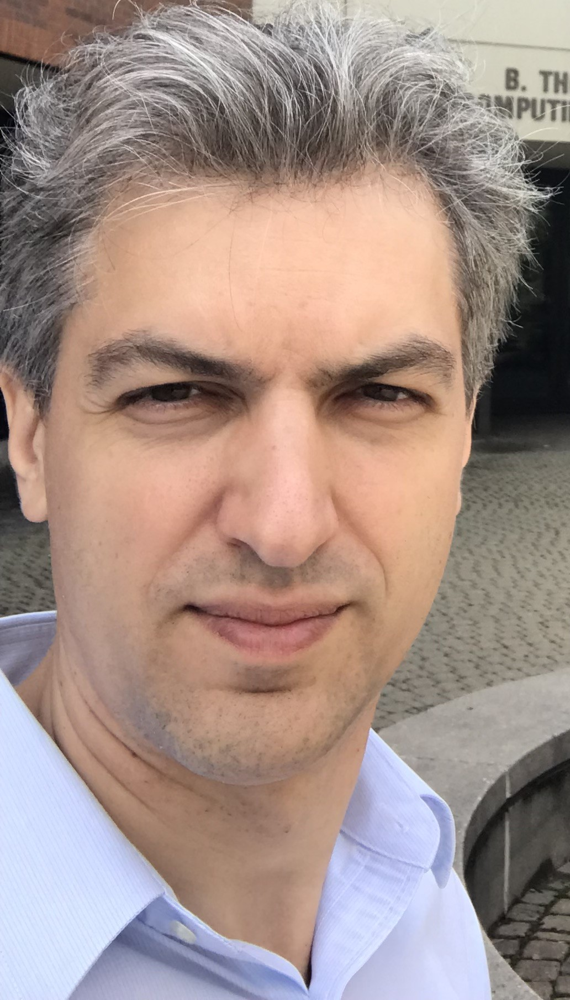

Anton Selitskiy CV

Education
University of Rochester PhD ECE 05/2022 - 05/2026
University of Rochester MS ECE 08/2020 - 05/2022
Russian Academy of Music MA Opera Performance 09/2008 - 06/2013
Moscow State University PhD Mathematics 05/2004 - 04/2007
Moscow Aviation Institute BS/MS Applied Mathematics 09/1998 - 03/2004
Appointments
Visiting Lecturer, Rochester Institute of Technology, Rochester (NY) 08/2023 - 05/2025 official RIT page
Research Assistant, University of Rochester, Rochester (NY) 09/2021 - 12/2022
Senior Researcher, Russian Academy of Sciences, Moscow (Russia) 01/2012 - 06/2018
Associate Professor, Moscow Aviation Institute, Moscow (Russia) 10/2008 - 01/2012
Senior Lecturer, Moscow Aviation Institute, Moscow (Russia) 09/2007 - 08/2008
Lecturer, Moscow Aviation Institute, Moscow (Russia) 03/2004 - 06/2005
Courses
CSCI-141 Computer Science I (only video)
CSCI-335 Machine Learning (course materials and recorded lectures)
CSCI-539 Large Language Models (course materials and recorded lectures)
Bayesian Deep Learning - Independent Study Course (Spring 2024)
CSCI-665 Theory of Algorithms (Spring 2024)
Teaching Philosophy
I firmly believe that motivation and understanding are the cornerstones of effective education.
Over my 10 years of teaching experience, I have found that students truly enjoy studying
when they grasp the underlying concepts and purpose behind what they are learning.
Research Topics
Spatial Audio and Human - Computer Interaction
Bayessian Machine Learning
Differential Equations and Functional Analisys
A.M. Selitskiy and V.P. Vetrov, Bayessian Machine Learning (in progress)
A. Selitskiy and M. Kocharekar, Discrete Optimal Transport and Voice Conversion (2025)progect page
G. Zhu, F. Jiang, J. Darefsky, A. Selitskiy, and Zh. Duan, Music Source Separation with Generative Flow // IEEE
Signal Processing Letters, 29 (2022), 2288 - 2292 project page
M.S. Agranovich and A.M. Selitskii, Fractional powers of operators corresponding to coercive problems in Lipschitz domains //
Functional Analysis and Its Applications. 2013. V. 47, N 2. P. 83 - 95.
Contacts
Anton Selitskiy
University of Rochester
Computer Studies Building
Rochester, NY 14627-0231
Office CSB-606
aselitsk@ur.rochester.edu